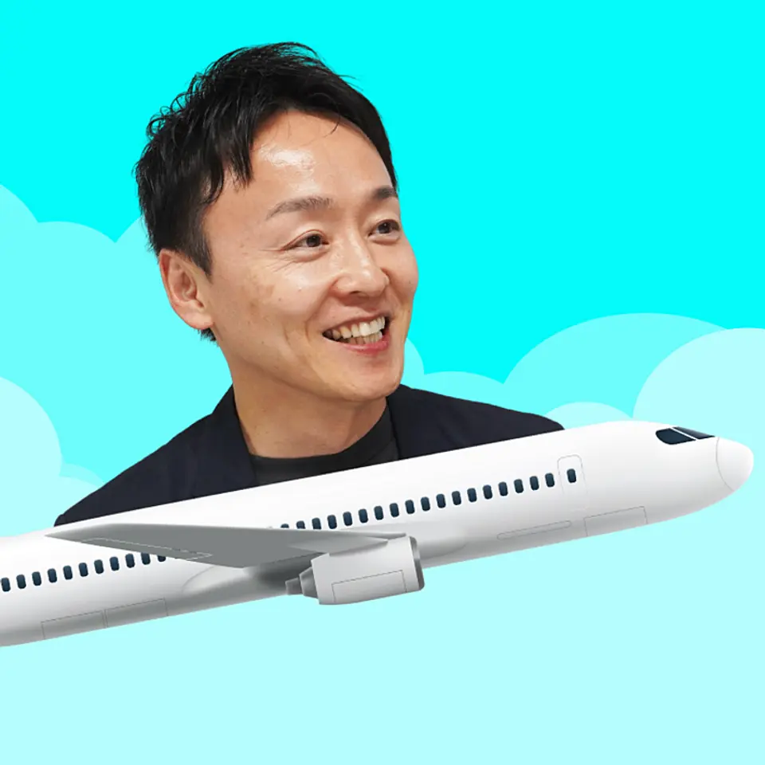
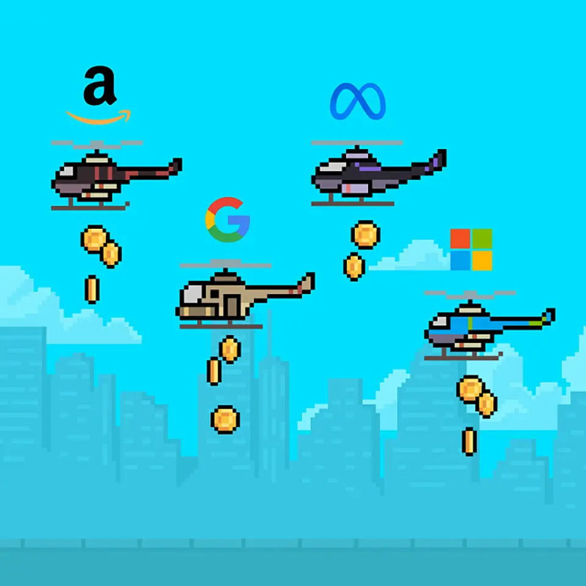
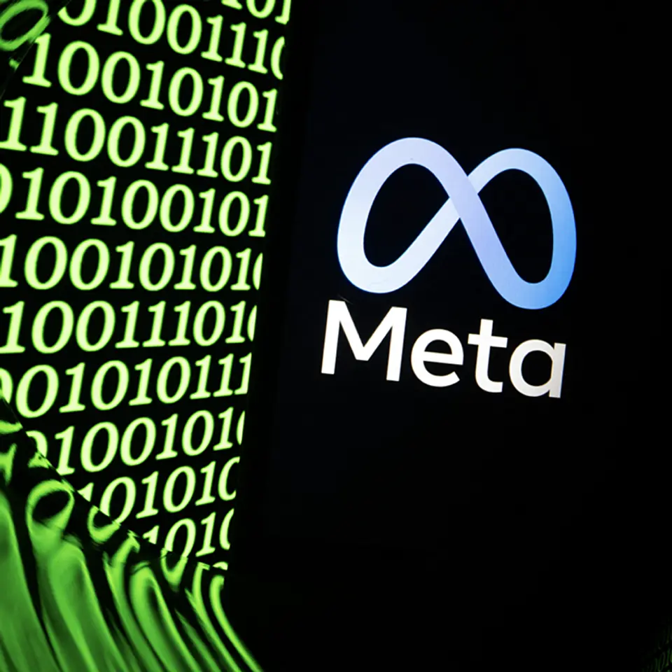
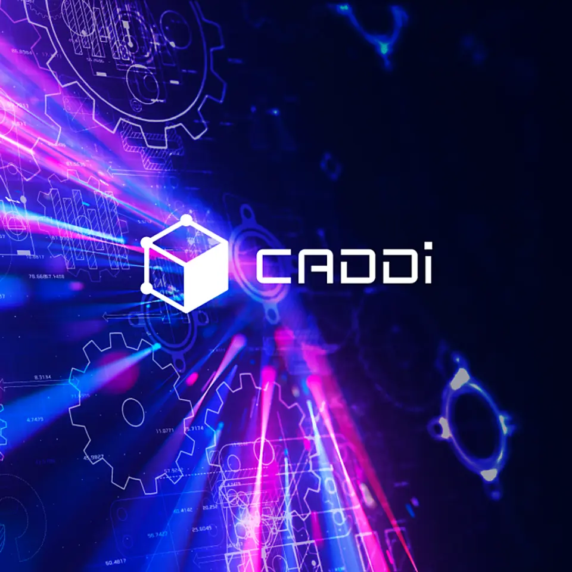
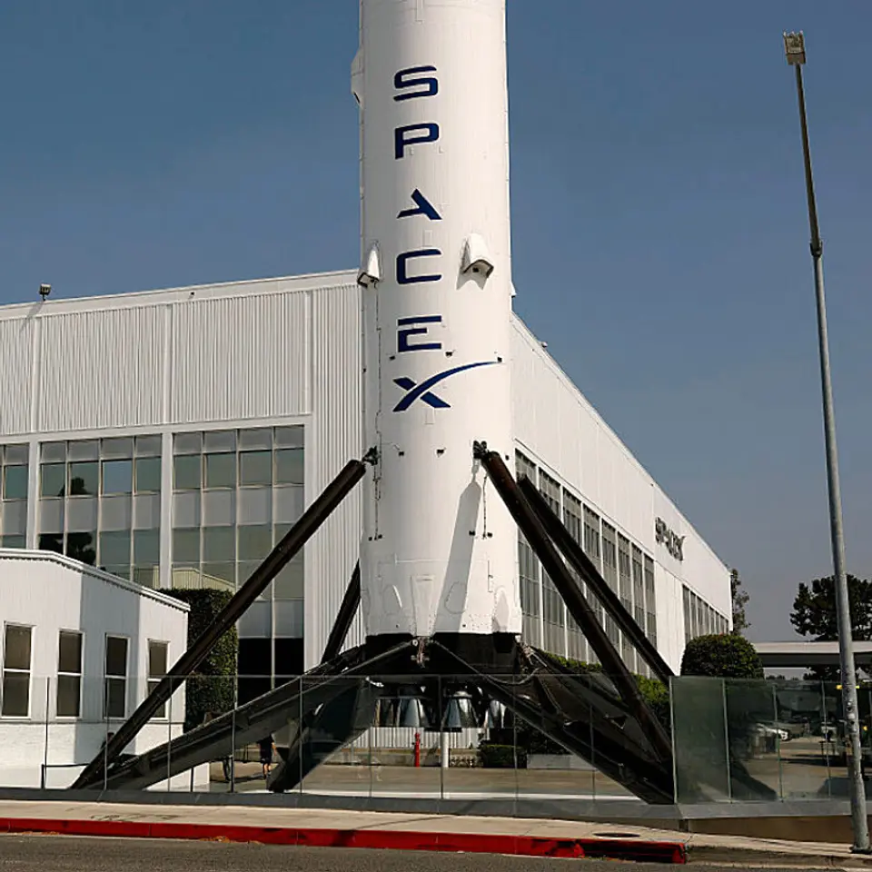

記事別メモ
1. 【社長独白】業務スーパーの次は「機内食ビジネス」が伸びる
発行日時: 2026/08/07 05:30 JST
あなたに関係ありそうな理由: 本業の強みを、単なる多角化でなく参入障壁の内側へ横展開するM&Aの考え方が、不動産や事業投資の見立てにも使えるから。
神戸物産は、業務スーパーに続く第二の柱として機内食事業へ入った。
グルメ杵屋との合弁会社MEAL HUBを通じてLSG APACを約550億円で買収し、香港、韓国、ニュージーランド、カナダなどの空港近接キッチンから、200社超の航空会社へ年間3130万食を供給する基盤を得た。
狙いは「食を安く仕入れる小売会社」の延長ではない。
既に持つ調達網、商品開発、価格競争力を、衛生・安全の基準が高く、空港内の場所と既存契約がものを言う市場へ持ち込む設計である。
社長は、和食や日本食材を機内食へ広げる可能性、各国の拠点を将来はPB生産にも生かす構想を語る。
一方で参入理由には、業務スーパー売上の約96%を一本の事業に依存するリスクがある。
円安、紛争、輸送ルートの遮断、輸入食品への不信といった外部要因は、個別商品の努力だけで避けにくい。
市場成長だけでなく、別の収益源を育てる意味がここにある。
コメント欄では、550億円で買った本体は厨房設備というより、空港内の場所と200社との契約、つまり後から作れない参入資格だという読みが印象に残った。
参入障壁は競争を減らす守りである反面、機内食を単なる大量供給から、和食、アレルギー、宗教・文化、健康、プレミアムといった多様な需要へ変えられるかが成長の条件になる。
M&Aを見る時は、売上や市場規模だけでなく、何を買っているのかを分解したい。
施設、許認可、顧客契約、現場人材、調達力のどれが模倣されにくいか。
そして買収後に自社の強みをどこへ流し込めるかまで描けて初めて、分散ではなく統合された投資になる。さらに、買収前には顧客契約の更新条件、食品安全の責任分界、各拠点の稼働率、共同出資者との意思決定を確かめたい。買った側の調達品が現地の品質・価格・文化に合うかも、机上のシナジーでは判断できない。小売で磨いた標準化と、航空会社ごとの個別要件を両立できるか。そこが「第二の柱」が柱になるかを分ける。事業のポートフォリオを増やす時ほど、本業が弱った場合の保険なのか、本業の調達・ブランド・販路を強める投資なのかを切り分ける必要がある。両方を狙うなら、成功の指標も売上だけでなく、契約維持率、原価低減、地域別の新規受注として置くべきだ。

仕事や会話で使える一言: 良いM&Aは会社を買うより、後から取りにくい場所と契約の内側へ自社の強みを入れる仕事ですね。
NewsPicks原文を読む
2. 【決算】AI投資で金を燃やすGAFM、厳しいのは「あの会社」
発行日時: 2026/08/07 05:30 JST
あなたに関係ありそうな理由: 設備投資を「額」ではなく、計算資源を継続収益へ変える回収装置として見る視点が、事業計画の比較に役立つから。
AIインフラ投資が巨額化するなか、記事はアマゾン、グーグル、マイクロソフト、メタの直近決算を、投資の回収力という軸で比べる。
2026年4〜6月期の営業利益はアマゾンが前年同期比43%増、グーグルが30%増だった一方、メタは8%減益だった。
訴訟やリストラなど一時費用もあるが、差を生む根は、計算資源を誰にどう貸し、利益へつなげるかにある。
アマゾン、グーグル、マイクロソフトはクラウドを通じ外部顧客へ計算資源を提供する。
特にアマゾンではクラウドの利益率が39%で、全社の14%を大きく上回る。
対してメタは外販クラウドを持たず、売上の97%を広告に依存する。
AIで広告の効率が高まるとしても、巨大なデータセンターを抱え続ける必然性と回収時期を、市場に説明する必要がある。
記事はまた、推論需要が増えるほど、自社チップを使えるかが差になるとみる。
グーグルとアマゾンは自社チップをクラウド利用者へ提供し、性能・コスト・供給の選択肢を持つ。
コメント欄では、4社を同じ設備投資額で比べる危うさも指摘された。
建屋、受変電設備、サーバーは更新周期が違うため、投資額を一括りにすると二巡目の更新原資が見えない。
またメタについては、クラウド不在を弱みと見る意見と、AIグラスや広告強化など別の収益化に賭ける余地を見る意見が併存した。
実務では、投資額より、稼働率、追加投資に対する粗利の増え方、需要が鈍った時の固定費、そして更新期に資金を出せるかを分けて追うのがよい。
AIの勝敗は、最も多く買った企業ではなく、増え続ける能力を需要と利益へ結び続けられる企業が握る。加えて、電力接続、土地、冷却、半導体調達、顧客の移転コストは、四半期決算だけでは見えにくいが重要だ。投資を止めれば供給不足、続ければ減価償却と金利負担が増える。だからこそ経営者の説明は「AIは伸びる」では足りず、どの顧客のどの業務が、何年の契約で、どの資産を使うのかまで具体性が要る。投資家も利用者も、その接続を見極めたい。利用企業側も、クラウド利用料を単なるIT費用とせず、売上、開発速度、顧客対応、障害時の代替手段にどう結びつくかを測る必要がある。供給者の巨額投資は、顧客の継続利用があって初めて回収されるからだ。

仕事や会話で使える一言: 設備投資は導入時より、更新期にも回収原資を出せるかで評価が変わります。
NewsPicks原文を読む
3. 【世界のニュース７選】メタに巨額支払命令 警告怠る
発行日時: 2026/08/07 17:00 JST
あなたに関係ありそうな理由: 個別ニュースを、事業の説明責任、海上輸送、制度変更、AIの安全性という複数のリスク線として短時間で俯瞰できるから。
The Economistの世界ニュース7選は、メタへの巨額支払い命令から始まる。
米裁判所は、児童の精神的健康を害するリスクについて利用者への警告を怠ったとして、フェイスブックとインスタグラムを持つメタに5億6700万ドルの支払いを命じた。
既に別訴訟で3億7500万ドルの支払い命令もあり、同社は控訴する方針だ。
ここで読むべきは賠償額だけではない。
プラットフォーム企業では、サービスの便利さと、設計・運用が生む社会的な副作用について、誰がどの時点で説明責任を負うのかという問いである。
記事は中東情勢にも触れる。
イラン議会ではホルムズ海峡の通航再開を巡る法案審議が進む一方、敵対国の船舶通過を禁じる内容が含まれるとされる。
フーシ派による攻撃や、バベルマンデブ海峡を通る石油輸送への圧力も重なり、海峡は地図上の細い線ではなく、物流価格と供給安定を左右する実物のボトルネックだと分かる。
米国では出生地主義を見直す大統領令を巡り、最高裁判断後も法廷闘争が続きそうだ。
イージージェットの買収受け入れ、ファウチ氏を巡る議会の動き、AIで設計された新しいファージの報告も並ぶ。
後者は、生成AIが医療・創薬で役立つ可能性と、バイオセキュリティ上の懸念を同時に持つことを示す。
表示コメントでは、AIが薬を作りロボットが治療する未来に期待と不安が入り混じるという感想があった。
技術の性能だけでなく、用途、監督、誤用時の被害を社会がどう扱うかが重要になる。
日々のニュースを追う時は、事件を単発で消費せず、責任の所在、物流の代替可能性、制度の持続性、技術の二面性という四つの質問を当てると、仕事への影響が見えやすい。たとえば海峡リスクでは、代替航路の有無だけでなく、何日遅れるのか、保険料や燃料費がどこへ転嫁されるのか、在庫を何日持てるのかまで確認する。プラットフォームの賠償では、違反後の支払いより、問題を発見する仕組み、利用者への表示、第三者監査が設計されていたかを問う。AIバイオでは、研究の有用性、配布範囲、実験の安全管理、悪用可能性を同時に扱う必要がある。世界情勢を不安材料で終えず、先行指標と自分の備えへ置き換える姿勢が大切だ。

仕事や会話で使える一言: 国際ニュースは、責任・物流・制度・技術の四つに分けると自分ごとにしやすいです。
NewsPicks原文を読む
4. 【製造革命】キャディの「次世代AI」が世界制覇に近づいた
発行日時: 2026/08/07 05:30 JST
あなたに関係ありそうな理由: 現場の暗黙知を、検索可能なデータだけでなく判断の文脈として残す発想が、複数事業の標準化にもつながるから。
キャディは、製造業のAIデータプラットフォームCADDiを、設計・調達・生産・保全にまたがる業務OSへ進化させた。
問題意識は明快だ。
AIの知能は急速に伸びても、製品を企画して量産まで持っていく物理世界の速度は変わらない。
伝統的な完成車メーカーでは新車開発に約4年を要し、設計、試作、検証、量産の工程は直列になりやすい。
CADDiはデータ基盤、意味をそろえるセマンティクス基盤、横断検索のExplorer、判断を支援するAgent、その上の六つの業務アプリという四層で、手戻りを減らし「製造プロセスを10倍速にする」と掲げる。
重要なのは、既存の図面、ERP、CRM、Excelを検索できるようにするだけではない。
現場の知見の多くは、なぜその部品を選んだか、なぜその見積先にしたかという判断過程として人の頭、会議、メールに埋もれる。
設計レビュー、見積、原価、工程、設備保全のアプリは業務を助けながら、その理由をデータ化する役割を持つ。
コメント欄では、製造業変革の根幹は単なるデータ量でなく意味の統合だという評価がある一方、紙で図面を広げる慣行にも合理性があり、入力・運用負荷や部門ごとの目的の違いを越えられるかが本当の難所だという指摘もあった。
記事自身も、導入提案の9割超で最大の壁は競合製品でなく顧客社内の慣行だと伝える。
すでにCADDi Drawerは日経225構成企業の組み立て系製造業の過半に導入され、22カ国で使われるという。
導入を進めるなら、全社一斉の正しさを掲げるより、最も痛い工程で小さく始め、そこで生まれた判断データが次の工程を便利にする循環を示すことが大切だ。
AI導入の成否はモデルの性能より、現場の文脈を誰がどう更新するかで決まる。現場に「入力させる」だけでは、忙しい人ほど後回しになり、肝心の例外処理が残らない。既存業務より速く、判断の根拠が本人にも役立つ形で返ることが必要だ。また、データの意味を決める役割をIT部門だけに置くと、設計・調達・品質の解釈が置き去りになる。各部門が合意する共通語と、地域や工場ごとに残す差分を分けて管理する。導入の成果は検索回数ではなく、手戻り、見積比較、品質事故、教育期間がどう変わったかで測りたい。

仕事や会話で使える一言: データ化すべきなのは結果だけでなく、なぜその判断をしたかという現場の文脈です。
NewsPicks原文を読む
5. 【3分解説】スペースXの株価下落の理由
発行日時: 2026/08/07 05:30 JST
あなたに関係ありそうな理由: 大きな将来像と足元の資金負担をどう同時に読むかは、成長事業や設備投資を評価する共通の論点だから。
SpaceXは6月の大型上場後、初めての四半期決算を発表した。
売上高は前年同期比92%増とロケット級の伸びを見せ、AI計算資源をアンソロピックやグーグルなどへ貸し出す事業が増収に寄与した。
しかし市場が注目したのは、成長そのものより成長のための支出だった。
AI設備投資は四半期で160億ドル近くに達し、グループ売上高の二倍超。
会社は依然赤字で、時価総額は既にピークから大きく下げ、決算後にも下落した。
ロックアップ解除で市場に出る可能性のある株式への懸念も売り圧力を強めた。
イーロン・マスク氏は、データセンター容量を2027年末までに大幅拡大し、2030年には売上高を1兆ドルへ伸ばす構想を示す。
エヌビディアの先端AI半導体を専用に使うという発言は同社株を押し上げた一方、新型衛星と周波数帯を武器に通信顧客を奪う可能性は米通信大手の株価を下げた。
ここには、一社の決算説明が部材、電力、通信、宇宙、ロボットへ連鎖する現実がある。
記事は月面工場をヒューマノイドが動かす未来にも触れるが、投資家はまず現在の損益と資金繰りを見る。
コメント欄では、下落の理由より、そもそも株価がなぜあれほど膨らんだのかを問う声、短期利益だけでなく経営者がどんな未来を描き、その実現へ何をしているかも評価すべきだという声があった。
両方とも必要な見方だろう。
壮大なビジョンは、投資の方向を示すが、回収の経路を自動的には作らない。
投資判断では、顧客契約や利用料のような現在の需要、設備更新を含む資金負担、規制や競争による前提変化、そして経営者の約束を検証する節目を分けて置きたい。
未来の物語に惹かれるほど、次の四半期で確認できる指標も決めておくことが、熱狂と失望の振れを小さくする。SpaceXの場合なら、AI計算資源の契約額が実際の売上とキャッシュへどの速度で変わるか、設備投資がいつまで続くか、衛星・通信事業の顧客がどれだけ増えるか、ロックアップ解除後の需給がどうなるかが節目になる。通信会社との競争は、周波数や端末、規制、地上局の整備にも左右される。月面工場のような長期構想を否定する必要はないが、長期の選択肢価値と短期の執行力を混同しないことが肝心だ。夢を測る物差しを用意しておけば、期待が外れた時にも次の判断を冷静にできる。

仕事や会話で使える一言: 大きな未来像は必要ですが、次の検証指標まで置いて初めて投資判断になります。
NewsPicks原文を読む